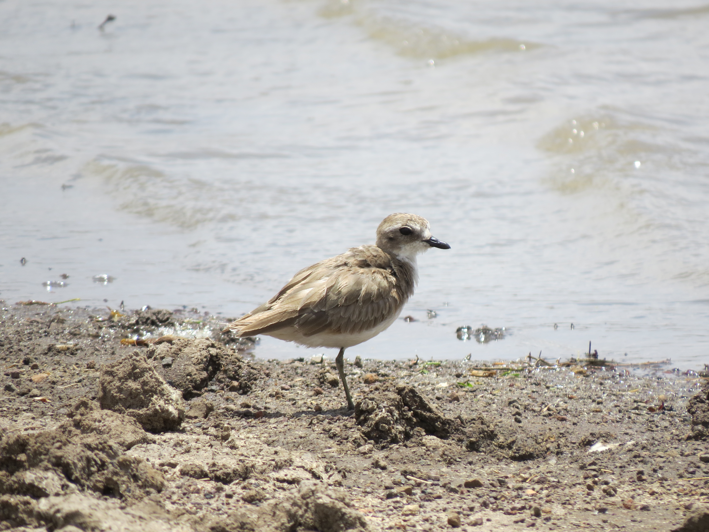

From
: James Bradley <jalopyjamo@gmail.com>
Date
: 2017-41-06 06:04
Subject
: Lesser Sandplover in NNP 4 Apr 2017
Dear All,
Here is the photo of the Lesser Sandplover at Athi Basin on 4 Apr. I could find only three previous Nairobi records in various literature; Sep and Oct 1982, and in Sep 2014, all from either Athi Basin or Dandora.
Best Wishes,
James
--
James Bradley
Sidney, BC
